The isobxr package is a set of R tools designed to perform and explore stable isotope box modeling of open or closed systems. It provides a ready-to-use tool allowing users to develop and test isotopic box models of their system of interest. It allows the user to explore the behavior of these systems in both static (e.g., at steady state) or dynamic modes (e.g., in reaction to a perturbation), build complex scenarios, and sweep the space of parameters in both static and dynamic modes.
Installation
The isobxr is available as a source package from GitHub.
Download and install/update R.
Download and install package devtools
install.packages("devtools")
- Download and install isobxr source package.
devtools::install_github("ttacail/isobxr/isobxr", build_vignettes = TRUE) # FALSE if no pandoc/Rstudio
The user is also invited to download the reference templates for all input and master excel files described in this vignette, as well as download the demonstration files input and master excel files (see Getting started 1 and Getting started 2).
The isobxr package is working under R 3.5.2 to 4.0.3 versions.
It's portability has been proof checked for the following platforms:
Mac OS 10.12.6 & 10.13.6
Linux (Ubuntu 20.04.1 LTS)
Windows 10
You can load the isobxr package as follows:
Here is the package description of the current version, where you can find the required minimal versions of dependencies:
packageDescription("isobxr") #> Package: isobxr #> Type: Package #> Title: Stable isotope box-modelling in R #> Version: 0.1.0 #> Authors@R: person("Theo", "Tacail", email = "theo.tacail@gmail.com", #> role = c("aut", "cre")) #> Description: A set of functions to run simple and composite box-models #> to describe the dynamic or static distribution of stable #> isotopes in open or closed systems. The package also allows the #> sweeping of many parameters in both static and dynamic #> conditions. It also comes with a post-run plotting interface #> built under shiny. #> Depends: R (>= 3.5.0) #> License: GPL-3 #> URL: https://github.com/ttacail/isobxr #> BugReports: https://github.com/ttacail/isobxr/issues #> Encoding: UTF-8 #> LazyData: true #> Imports: stringr (>= 1.4.0), readxl (>= 1.3.1), dplyr (>= 1.0.2), #> data.table (>= 1.13.2), deSolve (>= 1.28), rlang (>= 0.4.8), #> grid (>= 4.0.3), metR (>= 0.7.0), beepr (>= 1.3), shiny (>= #> 1.5.0), shinyFiles (>= 0.8.0), shinythemes (>= 1.1.2), shinyjs #> (>= 2.0.0), DT (>= 0.16), ggplot2 (>= 3.3.2), ggrepel (>= #> 0.8.2), qgraph (>= 1.6.5), writexl (>= 1.3.1) #> RoxygenNote: 7.1.1 #> Suggests: knitr, rmarkdown, devtools #> VignetteBuilder: knitr #> Author: Theo Tacail [aut, cre] #> Maintainer: Theo Tacail <theo.tacail@gmail.com> #> Built: R 4.0.3; ; 2021-03-12 17:21:47 UTC; unix #> #> -- File: /private/var/folders/bj/pyh7pv4922973yvnx5jyvps1f6vt0y/T/Rtmpmfsz8u/temp_libpath3a362e8b7ea9/isobxr/Meta/package.rds
You can locally browse the vignette as follows:
browseVignettes("isobxr")
Theory of box modeling and formalism
- The theory and formalism shown in this section is derived from the chapter 7 (Dynamic systems) of
-
Albarède, F., 1995. Introduction to Geochemical Modeling. Cambridge University Press, Cambridge.
https://doi.org/10.1017/CBO9780511622960
Principles of stable isotopes box modeling
We consider a system consisting of \(n\) boxes \(j\), exchanging an element X that has at least two stable isotopes \(M\) and \(N\). Any box \(i\) is defined by:
- \(m^X_i\) the mass of element X in box \(i\) - also refered to as box size thereafter
- \(m^M_i\) and \(m^N_i\) the masses of isotopes \(M\) and \(N\) in box \(i\), respectively
- \(J_{i \mapsto j}^X\) is the massic flux of X from \(i\) to \(j\) (homogeneous to a mass per time unit)
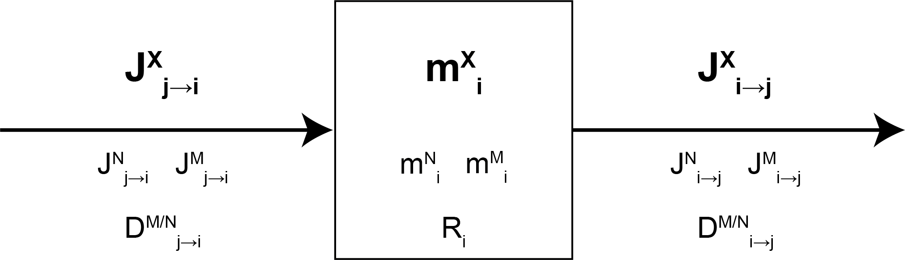
We call \(R_i\) the \(M/N\) isotope abundance ratio: \[R_i = \left(\dfrac{n^M}{n^N}\right)_i = \left(\dfrac{m^M}{m^N}\right)_i \times \left(\dfrac{M^N}{M^M}\right) = \left(\dfrac{m^M}{m^N}\right)_i A \] where
- \(n^M_i\) and \(n^N_i\) are the molar quantities of isotopes \(M\) and \(N\) in box \(i\)
- \(M^M\) and \(M^N\) are the molar masses of isotopes \(M\) and \(N\) in box \(i\)
- \(A = \left(\frac{M^N}{M^M}\right)\) the ratio of the molar masses of \(N\) and \(M\).
Finally, we define \(D_{i \mapsto j}^{M/N}\) the relative fractionation coefficient between M and N from \(i\) to \(j\):
\[D_{i \mapsto j}^{M/N} = \dfrac{{J_{i \mapsto j}^M}/{J_{i \mapsto j}^N}}{m^M_i/m^N_i}\]
The principe of modeling the system consists now in predicting the evolution of box sizes (\(m^X_i\)) during time and the evolution of the isotope ratios (\(R_i\)), knowing the fluxes, initial box sizes and fractionation coefficients.
Mass conservation of element X
Considering X has no radioactive nor radiogenic component, mass conservation for element X reads :
\[\dfrac{dm^X_i}{dt} = - \sum \limits_{j\neq i} J_{i \mapsto j}^X + \sum \limits_{j\neq i} J_{j \mapsto i}^X\]
This equation can be integrated in its linear form considering constant fluxes as follows:
\[m^X_i = \left(- \sum \limits_{j\neq i} J_{i \mapsto j}^X + \sum \limits_{j\neq i} J_{j \mapsto i}^X\right) \times t + m^X_{i, t_0}\]
where \(m^X_{i, t_0}\) is the mass of element X in box \(i\) at t = 0.
System of differential equations for stable isotope ratios
Considering \(N\) and \(M\) are stable and non radiogenic, mass conservation reads :
\[\dfrac{dm^N_i}{dt} = - \sum \limits_{j\neq i} J_{i \mapsto j}^N + \sum \limits_{j\neq i} J_{j \mapsto i}^N = - \sum \limits_{j\neq i} \dfrac{J_{i \mapsto j}^N}{m^N_i} m^N_i + \sum \limits_{j\neq i} \dfrac{J_{j \mapsto i}^N}{m^N_j} m^N_j\]
Likewise,
\[\dfrac{dm^M_i}{dt} = - \sum \limits_{j\neq i} \dfrac{J_{i \mapsto j}^M}{m^M_i} m^M_i + \sum \limits_{j\neq i} \dfrac{J_{j \mapsto i}^M}{m^M_j} m^M_j\]
We can meanwhile derive the ratio \(R_i\) as :
\[\dfrac{dR_i}{dt} = \dfrac{d}{dt}\left(\dfrac{m^M}{m^N}\right)_i A = \dfrac{A}{{m^N_i}^2} \left(m^N_i\dfrac{dm^M_i}{dt} - m^M_i \dfrac{dm^N_i}{dt}\right) = \dfrac{A}{m^N_i} \left(\dfrac{dm^M_i}{dt} - \dfrac{R_i}{A} \dfrac{dm^N_i}{dt}\right)\]
We can insert mass conservation deriative into previous relationship:
\[\dfrac{dR_i}{dt} = \dfrac{A}{m^N_i} \left(- \sum \limits_{j\neq i} \dfrac{J_{i \mapsto j}^M}{m^M_i} m^M_i + \sum \limits_{j\neq i} \dfrac{J_{j \mapsto i}^M}{m^M_j} m^M_j + \dfrac{R_i}{A} \sum \limits_{j\neq i} \dfrac{J_{i \mapsto j}^N}{m^N_i} m^N_i - \dfrac{R_i}{A} \sum \limits_{j\neq i} \dfrac{J_{j \mapsto i}^N}{m^N_j} m^N_j \right)\]
Modified as such :
\[\dfrac{dR_i}{dt} = A \left(- \sum \limits_{j\neq i} \dfrac{J_{i \mapsto j}^M}{m^M_i} \dfrac{m^M_i}{m^N_i} + \sum \limits_{j\neq i} \dfrac{J_{j \mapsto i}^M}{m^M_j} \dfrac{m^M_j}{m^N_j} \dfrac{m^N_j}{m^N_i} + \dfrac{R_i}{A} \sum \limits_{j\neq i} \dfrac{J_{i \mapsto j}^N}{m^N_i} - \dfrac{R_i}{A} \sum \limits_{j\neq i} \dfrac{J_{j \mapsto i}^N}{m^N_j} \dfrac{m^N_j}{m^N_i} \right)\]
\[\dfrac{dR_i}{dt} = A \left(- \sum \limits_{j\neq i} \dfrac{J_{i \mapsto j}^M}{m^M_i} \dfrac{R_i}{A} + \sum \limits_{j\neq i} \dfrac{J_{j \mapsto i}^M}{m^M_j} \dfrac{R_j}{A} \dfrac{m^N_j}{m^N_i} + \dfrac{R_i}{A} \sum \limits_{j\neq i} \dfrac{J_{i \mapsto j}^N}{m^N_i} - \dfrac{R_i}{A} \sum \limits_{j\neq i} \dfrac{J_{j \mapsto i}^N}{m^N_j} \dfrac{m^N_j}{m^N_i} \right)\]
\[\dfrac{dR_i}{dt} = R_i \sum \limits_{j \neq i} \left(\dfrac{J^N_{i \mapsto j}}{m^N_i} - \dfrac{J^M_{i \mapsto j}}{m^M_i} \right) + \sum \limits_{j \neq i} \dfrac{J^M_{j \mapsto i}}{m^M_j} \dfrac{m^N_j}{m^N_i} R_j - \sum \limits_{j \neq i} \dfrac{J^N_{j \mapsto i}}{m^N_j} \dfrac{m^N_j}{m^N_i} R_i\]
\[\dfrac{dR_i}{dt} = R_i \sum \limits_{j \neq i} \left(\dfrac{J^N_{i \mapsto j}}{m^N_i} - \dfrac{J^M_{i \mapsto j}}{m^M_i} \right) + \sum \limits_{j \neq i} \left( \dfrac{J^M_{j \mapsto i}}{m^M_j} R_j - \dfrac{J^N_{j \mapsto i}}{m^N_j} R_i \right) \dfrac{m^N_j}{m^N_i}\]
\[\dfrac{dR_i}{dt} = R_i \sum \limits_{j \neq i} \dfrac{J_{i \mapsto j}^N}{m^N_i} \left(1- \dfrac{{J_{i \mapsto j}^M}/{J_{i \mapsto j}^N}}{{m^M_i}/{m^N_i}}\right) + \sum \limits_{j \neq i} \dfrac{J_{j \mapsto i}^N}{m^N_j} \left(\dfrac{{J_{j \mapsto i}^M}/{J_{j \mapsto i}^N}}{m^M_j / m^N_j} R_j - R_i \right) \dfrac{m^N_j}{m^N_i}\]
Resulting in :
\[\dfrac{dR_i}{dt} = R_i \sum \limits_{j \neq i} \dfrac{J_{i \mapsto j}^N}{m^N_i} \left(1- D_{i \mapsto j}^{M/N} \right) + \sum \limits_{j \neq i} \dfrac{J_{j \mapsto i}^N}{m^N_j} \left(D_{j \mapsto i}^{M/N} R_j - R_i \right) \dfrac{m^N_j}{m^N_i}\]
In order to solve this equation, we assume that:
\[\begin{array}{ccccc} \dfrac{J_{i \mapsto j}^N}{m^N_i} \simeq \dfrac{J_{i \mapsto j}^X}{m^X_i} & , & \dfrac{J_{j \mapsto i}^N}{m^N_j} \simeq \dfrac{J_{j \mapsto i}^X}{m^X_j} & , & \dfrac{m^N_j}{m^N_i} \simeq \dfrac{m^X_j}{m^X_i} \end{array}\]
These assumptions are valid for amplitude of stable isotope fractionations of the order of tens of ‰. This assumption finds its limitation in the case of ample stable isotope fractionations of isotopic systems of light elements (such as D/H).
In these cases, the differences in reactivities can be too great and amplitudes of stable isotope fractionations too marked for the assumptions to be applicable.
We thus have the following system of first order differential equations used thereafter:
\[ \dfrac{dR_i}{dt} = R_i \sum \limits_{j \neq i} \dfrac{J_{i \mapsto j}^X}{m^X_i} \left(1- D_{i \mapsto j}^{M/N} \right) + \sum \limits_{j \neq i} \dfrac{J_{j \mapsto i}^X}{m^X_j} \left(D_{j \mapsto i}^{M/N} R_j - R_i \right) \dfrac{m^X_j}{m^X_i} \]
This system can be solved in order to reconstruct the evolution of stable isotope ratios \(R_i(t)\) in each box over time. Two main situations can be distinguished here.
The inward and outward fluxes of element X for any given box are balanced (i.e. \({dm^X_i}/{dt} = 0\) for all boxes). All box sizes (\(m^X_i\)) are thus constants.
The inward and outward fluxes of element X for at least one box is unbalanced (i.e. \({dm^X_i}/{dt} \neq 0\) for at least one box). Thus, at least one box displays a varying mass of element X with time (\(m^X_i(t)\)).
In the first case, the reconstruction of \(R_i(t)\) only requires the solving of the system of ordinary first order differential equations. This can be done analytically via the algebric inversion of the equation system matrix. This is what the ana_slvr core functions does.
In the second case, the reconstruction of \(R_i(t)\) requires the simultaneous solving of the system of ordinary first order differential equations describing \(R_i(t)\) and of the derivative of \(m^X_i(t)\) (with a linear solution). This is performed numerically via an incremental integration as done by the num_slvr core function.
All \(R_i(t)\) stable isotope ratios can be also expressed as \(\delta_i(t)\) values expressed in the ‰ unit, defined as follows and where \(R_{std}\) is the stable isotope ratio of the standard or reference material:
\[\delta^{M/N}X_i(t) = \left(\dfrac{R_i(t)}{R_{std}} - 1\right) \times 1000 \]
The isobxr solvers of stable isotope box models
The isobxr package uses two core solver functions to solve the system of differential equations: num_slvr and ana_slvr. These functions are called within broader functions and are not designed to be directly used by users themselves, although this remains possible. Nonetheless, because these functions are the actual solvers of the stable isotope box model equation systems, you will find here a description of their functionning as well as their inputs and outputs.
You can also refer to the documentation for these two functions by typing the following code into your R console:
?ana_slvr ?num_slvr
Structure and format required for the input files
The input file is the (xlsx) document containing all input data allowing both ana_slvr and num_slvr to run. Its format and name are standardized and should not be altered. Its direct modification by user is not required because input files are edited by the broader and user-friendly run_isobxr function, described in another section of this vignette.
Input file name
- The input file is an xlsx file.
- The input file name needs to end with the following: [ _INPUT.xlsx ].
- The input file name structure is [ RUN name + _INPUT.xlsx ].
- Example: [ TEST_RUN_INPUT.xlsx ]
Input file structure
The input file contains at least the 4 following sheet strictly named as follows:
-
CONSTS: Sheet documenting the constants
- INITIAL: Sheet documenting the initial conditions of all box sizes (even empty ones) and all initial delta values.
- FLUXES: Sheet documenting the massic fluxes of element X between all boxes (structured as a matrix)
- COEFFS: Sheet documenting the isotopic fractionation coefficients between all boxes (structured as a matrix)
CONSTS sheet
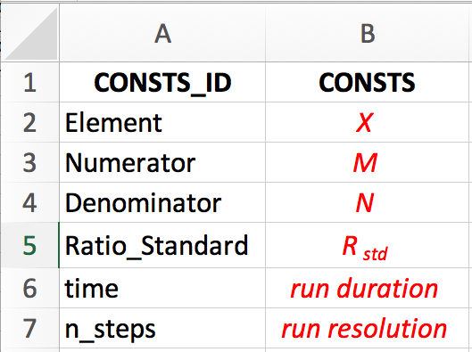
The CONSTS sheet should be strictly structured as shown here.
All text in black has to be strictly the same as shown.
All italicized and red text corresponds to numerical or litteral variables set by the user:
-
X is the element of interest. Example: Ca
-
M is the numerator isotope. Example: 44
-
N is the denominator isotope. Example: 42
-
\(R_{std}\) is the isotope ratio of a standard or reference material, used to express the delta value. Example: 3.20297
- time is the duration of the run, expressed in the same time units as the fluxes (expressed in mass unit per time unit). Example: 365 (days in case fluxes are expressed in mass of element per day)
- nb_steps is the run resolution, i.e. the number of iterations to do within the run duration. Example: 365 (1 calculated state of the system per day)
INITIAL sheet
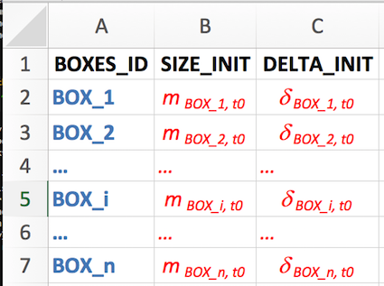
The INITIAL sheet should be strictly structured as shown here.
All text in black has to be strictly the same as shown.
All blue text corresponds to litteral names of the n boxes defined by user.
- These names should be coherent with all other references to box names (as in FLUXES or COEFFS sheet).
- Two or more boxes can not have the exact same name.
- The user should avoid the use of numerical values in the box names.
- The user should avoid the use of spaces or special characters, with the exception of the underscore "_".
The user should chose abbvreviated names (preferabily 3 characters, for the sake of clarity in diagrams and plots).
- Example of lists of box names:
- OCEAN, MTLE, C_CRUST, O_CRUST, RVR for ocean, mantle, continental crust, oceanic crust and river boxes respectively
- DIET, MUSCLE, KDN, BONE, UR for diet, muscle, river, bone and urine boxes respectively
All italicized and red text corresponds to numerical variables set by the user:
- In the column SIZE_INIT (box sizes at initial state): \(m_{BOX\_i, t_0}\) corresponds to the mass of element X in box i at t = 0. These values are null or positive real numbers.
- In the column DELTA_INIT (box delta values at initial state): \(\delta_{BOX\_i, t_0}\) corresponds to the delta value in box i at t = 0. These values are real numbers.
FLUXES sheet
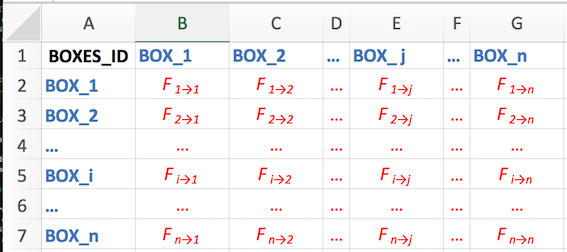
The FLUXES sheet should be strictly structured as shown here.
All text in black has to be strictly the same as shown (BOXES_ID here).
All blue text corresponds to exact same litteral names of the n boxes as defined by the user in INITIAL sheet, in the same vertical and horizontal order as in INITIAL sheet.
All italicized and red text corresponds to numerical variables set by the user:
-
\(F_{i \to j}\) corresponds to flux of element X from box i to box j
(equivalent to \(J_{i \mapsto j}^X\) in the system of differential equations as described above).
These values are null or positive real numbers.
COEFFS sheet
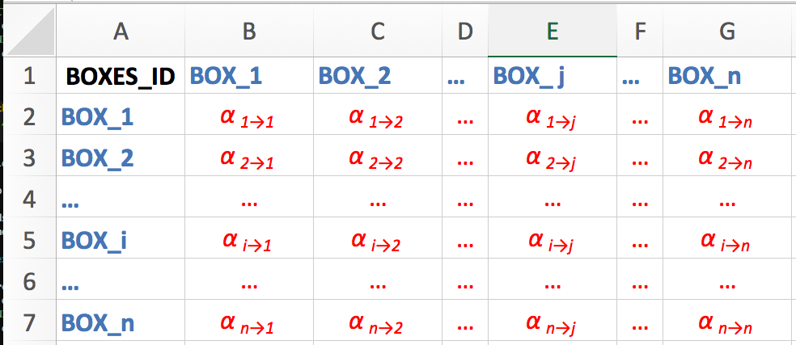
The COEFFS sheet should be strictly structured as shown here.
All text in black has to be strictly the same as shown (BOXES_ID here).
All blue text corresponds to exact same litteral names of the n boxes as defined by the user in INITIAL sheet, in the same vertical and horizontal order as in INITIAL sheet.
All italicized and red text corresponds to numerical variables set by the user:
-
\(\alpha_{i \to j}\) corresponds to isotope fractionation coefficient from box i to box j
(equivalent to \(D_{i \mapsto j}^X\) in the system of differential equations as described above).
These values are stricly positive real numbers.
Numerical solver (num_slvr)
The numerical solver num_slvr iteratively integrates the derivatives of the box sizes (\(\frac{dm^X_i}{dt}\)) and isotope ratios (\(\frac{dR_i}{dt}\)) over the whole run duration. The num_slvr uses the ode ordinary differential equation integrating function from the deSolve package.
Applicability
This function solves both the evolution of isotope ratios and box sizes in each box defined by user. The num_slvr function therefore can be used in two distinct sitation:
In the case of balanced fluxes of element X between all involved boxes.
The derivative of box sizes will be null (\(\frac{dm^X_i}{dt} = 0\)), in other words all box sizes will be constant.In the case of unbalanced fluxes of element X for at least one box of the system.
The derivative of box sizes will be non null in at least one case (\(\frac{dm^X_i}{dt} \neq 0\)), in other words at least on box loses and accumulates the element X.
The drawbacks of this function is that
- Its accuracy depends on the time resolution of the run.
- The calculation can be time consuming.
- We miss information on the system dynamics, which an analytical solver could bring.
The use of this function is thus preferred in the case of unbalanced fluxes, where at least one box loses or accumulates the element X over time (case #2). It then allows to study the dynamic responses of a system to a perturbation of the flux balance for at least one box.
Using num_slvr
Remark: The direct use of num_slvr function by user is not encouraged since this function is integrated in the global run_isobxr function described thereafter.
The num_slvr function reads an INPUT file (file name structure: RUN name + _INPUT.xlsx, format described in detail below) containing all commands and conditions for the required model run, namely:
-
Constants defining the system (Element symbol, isotopes considered, standard or reference material isotope ratio, run duration and number of time steps)
-
Initial conditions where each box is associated to an initial size (mass of element X) and an initial isotope composition expressed in delta value (‰ unit)
- A matrix fluxes of element X between all boxes of the system (in mass unit per time unit)
- A matrix of isotope fractionation coefficients associated to all boxes of the system
The num_slvr function returns the numerically determined evolution of the stable isotope compositions and box sizes X in all boxes over the run duration. The detailed outputs are as follows:
- OUT data file storing initial and final size and delta values in each box.
(file name structure: RUN name + _N_1_OUT.csv) - evS data file storing the evolution with time of the sizes (masses of element X) of each box.
(file name structure: RUN name + _N_2_evS.csv) - evD data file storing the evolution with time of the delta values in each box.
(file name structure: RUN name + _N_3_evD.csv)
Analytical solver (ana_slvr)
The analytical solver ana_slvr calculates the analytical solutions of the system of ordinary differential equations (ODES) of stable isotope ratios of an element X in all boxes. It determines the eigenvalues, eigenvectors and constants defined by initial conditions associated to the ODES, and allows to determine the expression of stable isotope ratios as a function of time.
Applicability
In this case, the box sizes are considered as constant since the solving of the system of differential equations only considers the isotope ratios as functions of time. In other words, in the case with balanced inward and outward fluxes for all boxes (\(\frac{dm^X_i}{dt} = 0\)), this function allows to accurately determine the expression of the stable isotope ratio in a given box as a function of time. The function also edits a data set of the evolution of isotope compositions in each box over the time range and with the time resolution determined by the user.
The use of this function is thus not applicable in the case of unbalanced fluxes for one box or more, with the exception of boxes defined as source or sinks (or waste) in the case of open systems, as described in the model design section thereafter.
Using ana_slvr
Remark: The direct use of ana_slvr function by user is not encouraged since this function is integrated in the global run_isobxr function described thereafter.
The ana_slvr function reads an INPUT file (file name structure: RUN_ID + INPUT.xlsx, format described in detail below) containing all commands and conditions for the required model run, namely:
-
Constants defining the system (Element symbol, isotopes considered, standard or reference material isotope ratio, run duration and number of time steps)
-
Initial conditions where each box is associated to an initial size (mass of element X) and an initial isotope composition expressed in delta value (‰ unit)
- A matrix fluxes of element X between all boxes of the system (in mass unit per time unit)
- A matrix of isotope fractionation coefficients associated to all boxes of the system
The ana_slvr function returns the analytical solutions of the stable isotope ratios as well as the evolution of the delta values (in ‰, relative to the reference material). The detailed outputs are as follows:
- OUT data file with initial and final size and delta values in each box.
(file name structure: RUN name + _A_1_OUT.csv) - ODE_SOLNs data file summarizing outputs of the analytical solutions of the ODES (eigenvalues, eigenvectors, relaxation times, constants according to initial conditions).
(file name structure: RUN name + _A_2_ODE_SOLNs.csv) - evD data file of the evolution with time of the delta values in each box.
(file name structure: RUN name + _A_3_evD.csv)
Running isobxr box models with run_isobxr
How does run_isobxr work?
The run_isobxr function allows to run the isobxr stable isotope box model, assess and render the design of the model and automatically run num_slvr or ana_slvr depending on the model design.
As defined in the documentation, run_isobxr takes a series of inputs from a working directory as well as from the user in the console, it stores a track of all the run conditions both in run specific files and in a global LOG file, and it returns several outputs files to an automatically created and managed directory and subdirectories.
To find the detailed description of run_isobxr inputs and outputs, refer to its documentation:
# To see documentation on run_isobxr function, type in console: ?run_isobxr
The run_isobxr general principle is shown in following diagram.
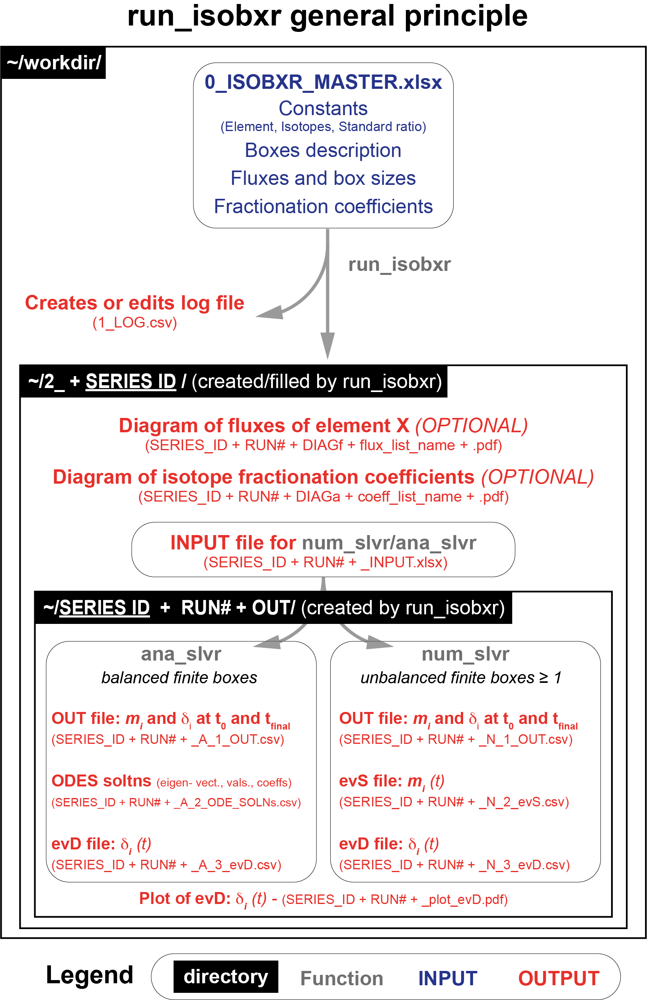
- The
run_isobxrfunction first extracts the configuration of the system (boxes, fluxes, fractionation coefficients) and of the given run (run duration, initial conditions).- These parameters come in majority from the isobxr master file (isotope system details, boxes details, flux and fractionation coefficient lists).
- Run specific parameters are directly set as parameters of the function (run duration, run resolution, time units for the plot).
- Optional parameters allow the manual forcing of some parameters (FORCING_RAYLEIGH, FORCING_SIZE, FORCING_DELTA, FORCING_ALPHA).
- The
run_isobxrfunction then evaluates the general design of the box model.- It will ignore boxes possibly named by user but isolated from the general system (no inward nor outward fluxes).
- It will determine if the system is closed or open by identifying the presence/absence of boxes with the INFINITE status.
- In the case of a closed system, i.e. with no declared INFINITE boxes, it will display the following message in the console:
-
< All boxes are FINITE >
-
< All boxes are FINITE >
- In the case of an open system, i.e. with declared INFINITE boxes, it will display the list of infinite boxes in the console:
-
< The INFINITE boxes are ... BOX_i ... >
-
< The INFINITE boxes are ... BOX_i ... >
- In the case of a closed system, i.e. with no declared INFINITE boxes, it will display the following message in the console:
- It will then determine whether some finite boxes are out of balance (unbalanced inward/outward fluxes).
- In the case of a globally balanced system, i.e. no out of balance finite boxes, no message will be printed in the console.
- In the case of a system with at least one unbalanced finite box, it will display a message for each unbalanced finite box in the console:
-
< BOX_i IN/OUT is pos > if the balance of box i is positive (accumulation of X)
- < BOX_i IN/OUT is neg (max run: empty_duration t units) > if the balance of box i is negative (loss of X). It will also display the maximum duration of the run until the box is totally emptied.
-
< BOX_i IN/OUT is pos > if the balance of box i is positive (accumulation of X)
- It will ignore boxes possibly named by user but isolated from the general system (no inward nor outward fluxes).
- On this basis, the
run_isobxrfunction then determines which solver function to run:-
ana_slvrif all finite boxes have balanced inward and outward fluxes. It will then display the following message:
< Running num_slvr (BALANCED FINITE BOXES) > -
num_slvrif at least one finite box has unbalanced inward and outward fluxes. It will then display the following message:
< Running ana_slvr (UNBALANCED FINITE BOXES) >
-
- remark
- in the case of a system with at least one unbalanced finite box with a negative balance of inward/outward fluxes, the function evaluates whether the run duration excedes the shortest duration of emptying of the finite boxes with a negative balance. If a box matches this criteria, the function will automatically reset the total run duration (e.g., t_max) to the duration of emptying of this box (e.g., updated_t_max). A warning will be printed. This warning message can not be hidden by the PRINT_HIDE parameter.
#> [1] "*** UPDATED TOTAL RUN TIME *** < Total run time has been changed from t_max to updated_t_max (limiting box: Box_i) >"Format of the isobxr master file
All the functions designed to be directly used by users (run_isobxr, compose_isobxr, sweep_steady, sweep_dyn) are meant to be run in relation with an isobxr master file.
The isobxr master file is the (xlsx) document containing all input data allowing run_isobxr function to perform single runs, and is required alongside specific complementary files for functions performing multiple runs (compose_isobxr, sweep_steady, sweep_dyn).
It is where the user sets the design of their model:
- define the isotopic system
- define the boxes, their status (in case of an open system, details below) and the layout of the model for diagram rendering
- define initial default box sizes (mass of element X)
- define the values of fluxes between boxes
- define the values of stable isotope fractionation coefficients linked to these fluxes
The format of the isobxr master file is standardized. The user is encouraged to comply with these standards, as described thereafter, otherwise there is a high probability for these functions to crash.
isobxr master file name and location
- The isobxr master file is an xlsx file.
- The isobxr master file name needs to be exactly as follows: [ 0_ISOBXR_MASTER.xlsx ].
- the isobxr master file should be stored in the directory in which all runs (single or multiple runs) for this box model system will be performed and where all outputs will be stored in automatically created subdirectories. This directory corresponds to the working directory (workdir) used as parameter of the
run_isobxrfunction.
isobxr master file structure
The isobxr master file contains the 4 following sheet strictly named as follows:
- CONSTANTS: Sheet documenting the constants of the isotopic system
- BOXES: Sheet documenting names and status of all boxes constituting the system
- FLUXES: Sheet documenting the initial box sizes and massic fluxes of element X between boxes (structured as a column list)
- COEFFS: Sheet documenting the isotopic fractionation coefficients between all boxes (structured as a column list)
CONSTANTS sheet
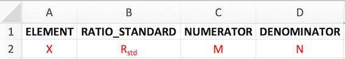
The CONSTS sheet should be strictly structured as shown here.
All text in black has to be strictly the same as shown.
All red text corresponds to numerical or litteral variables set by the user:
- X is the element of interest. Example: Ca
- \(R_{std}\) is the isotope ratio of a standard or reference material, used to express the delta value. Example: 3.20297
- M is the numerator isotope. Example: 44
- N is the denominator isotope. Example: 42
These constants will be used throughout all runs performed within the working directory in which the isobxr master file is stored.
BOXES sheet
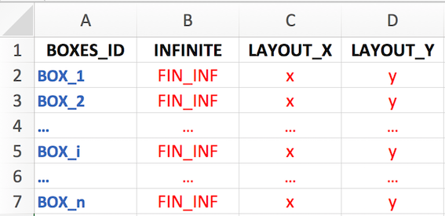
The BOXES sheet should be strictly structured as shown here.
All black text has to be strictly the same as shown.
All blue text of the column BOXES_ID corresponds to litteral names of the n boxes defined by the user.
- These names must be coherent with all other references to box names (as in FLUXES or COEFFS sheet).
- All boxes refered to everywhere else (such as FLUXES or COEFFS sheet or called within a function) must be defined in this list.
- Two or more boxes can not have the exact same name.
- The user must not use any special characters in the box names [ .!@#$%^&*()_+}{';|:/,?><}].
- The user should avoid the use of numerical values in the box names.
The user is advised to chose abbvreviated names (preferabily up to 3 characters, for the sake of clarity in diagrams and plots).
- Example of lists of box names:
- OCEAN, MTLE, C_CRUST, O_CRUST, RVR for ocean, mantle, continental crust, oceanic crust and river boxes respectively
- DIET, MUSCLE, KDN, BONE, UR for diet, muscle, river, bone and urine boxes respectively
All red text corresponds to litteral or numerical variables set by the user:
- The column INFINITE is used to store the status of the box depending on the box model design. The first purpose of this column is to specify to the code whether the model represents an open or closed system.
- In the case of an open system, the environment boxes (typically source or sink reservoirs) need to have the INFINITE status (strictly spelled in this way).
- For all boxes corresponding to finite boxes that are part of the system being either closed or open, the user is free to set a status name that describes the box category. In this case, the box status name needs to be named following the same spelling rules as for the box names.
Several boxes can have the same status name (e.g., INTERFACE or DEAD_END or FINITE). - Beyond the determination of the INFINITE vs. FINITE status of a box used for calculation purposes, this column is used by the isobxr functions to set a color code in the automatic box model diagram edition.
- In the case of an open system, the environment boxes (typically source or sink reservoirs) need to have the INFINITE status (strictly spelled in this way).
- The LAYOUT_X and LAYOUT_Y columns correspond to the user defined layout of the box model diagram.
- It corresponds to the definition of the coordinates of the boxes to be displayed in the diagram over a matrix format (X: line, Y: column, both being positive real numbers).
- It is recommended to separate the boxes horizontally (LAYOUT_X) and vertically (LAYOUT_Y) by at least 2 or 3 units to keep for the sake of diagram clarity.
- As specified above, it is recommended to keep box names in rather short abbreviated forms (up to 6 or 7 characters) so they remain legible in the diagram.
FLUXES sheet
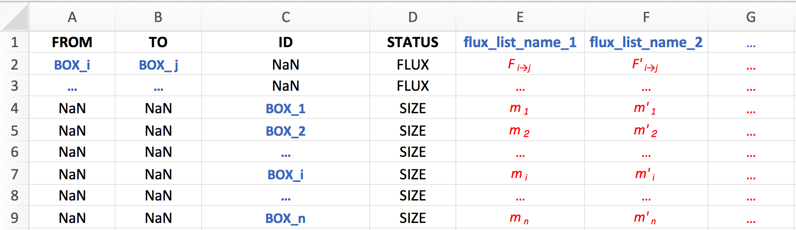
All black text has to be strictly the same as shown.
All blue text corresponds to litteral names (string of characters) defined by the user.
All red text corresponds to litteral or numerical variables set by the user.
The FLUXES sheet takes two types of input: fluxes and box sizes.
The FLUXES sheet allows the user to set as many sets of [fluxes + box sizes] conditions as desired, for the system defined in the BOXES sheet.
These sets of [fluxes + box sizes] conditions are called flux lists and are stored in as many columns as desired (columns flux_list_name_1, flux_list_name_2 and so on).
The name of the flux lists columns are determined by the user and refers to a specific set of [fluxes + box sizes] conditions.
It should avoid spaces and special characters other than underscores.
It can contain a number for the sake of list itemization (e.g., Fx_1 standing for flux list 1).The type of input is determined in the STATUS column by using stricly either FLUX or SIZE levels.
- A list of flux values is built as follows
- considering a flux F of element X from box i to j:
- the column FROM takes the exact name of the box \(i\)
- the column TO takes the name of the box \(j\)
- the column ID remains undocumented, by leaving NaN
- the column STATUS takes the FLUX status
- the column flux_list_name_1 takes the value of the desired \(F_{i \to j}\) flux, as a positive or null real number.
- the column FROM takes the exact name of the box \(i\)
- Within a given list, the user defines as many fluxes as desired (while strictly avoiding duplicate fluxes).
- Not all fluxes between all boxes need to be defined.
- All other fluxes that remain not specified by user here will be automatically set to 0 by
run_isobxr(no exchange of element X).
- considering a flux F of element X from box i to j:
- A list of box sizes values is built as follows
- considering a mass m of element X in box i:
- the column FROM remains undocumented, by leaving NaN
- the column TO remains undocumented, by leaving NaN
- the column ID takes the exact name of the box \(i\)
- the column STATUS takes the SIZE status
- the column flux_list_name_1 takes the value of the desired \(m_{i}\) box size, as a positive or null real number.
- the column FROM remains undocumented, by leaving NaN
- The user needs to define the size of all boxes.
- If the box remains unused (no connected flux), its size can be set at 0.
- The user is reponsible for carefully chosing meaningful sizes with respect to the inward and outward fluxes.
- In case of a negative balance of fluxes for a given box (i.e., the box is being emptied),
- If long enough, it is possible that the run leads to the total emptying of the box.
- This is dealt with by the
run_isobxrfunction by overwriting the run duration defined by the user by an updated run duration corresponding to the time required to empty the box with the shortest emptying time.
- In this case, the user is warned by a message in the console during the model run.
- considering a mass m of element X in box i:
- The units of the fluxes (mass unit per time unit) and sizes (mass unit) need to be homogeneous (same mass unit for both).
The units of the fluxes (mass unit per time unit) and run duration set in the function (time unit) need to be homogeneous (same time unit for both).
COEFFS sheet
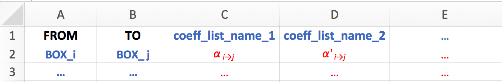
All black text has to be strictly the same as shown.
All blue text corresponds to litteral names (string of characters) defined by the user.
All red text corresponds to litteral or numerical variables set by the user.
The COEFFS sheet takes one type of input: the values of the isotope fractionation coefficients associated to the fluxes (also referred to as \(\alpha_{i \to j}\)).
The COEFFS sheet allows the user to set as many sets of [coefficients] conditions as desired, for the system defined in the BOXES sheet.
These sets of [coefficients] conditions are called coefficients lists and are stored in as many columns as desired (columns coeff_list_name_1, coeff_list_name_2 and so on).
The name of the coefficients lists columns are determined by the user and refers to a specific set of [coefficients] conditions.
It should avoid spaces and special characters other than underscores.
It can contain a number for the sake of list itemization (e.g., a_1 standing for coefficients list 1).- A list of coefficients values is built as follows
- considering an isotope fractionation coefficient from box i to j:
- the column FROM takes the exact name of the box \(i\)
- the column TO takes the name of the box \(j\)
- the column flux_list_name_1 takes the value of the desired \(\alpha_{i \to j}\) coefficient, a strictly positive real number, usually close to 1.
- the column FROM takes the exact name of the box \(i\)
- Within a given list, the user defines as many fractionation coefficients as desired (while strictly avoiding duplicates).
- Not all fractionation coefficients between all boxes need to be defined.
- All other fractionation coefficients that remain not specified by user here will be automatically set to 1 by
run_isobxr(no isotope fractionation).
- considering an isotope fractionation coefficient from box i to j:
- remark
- An important feature of the flux and coefficients lists, as documented by user in FLUXES and COEFFS sheet, is that the design of these lists does not require the exhaustive description of all possible combinations of box pairs.
Non described box pairs will have their fractionation coefficient set to 1 (or their flux value set to 0 in the case of the fluxes description).
Using run_isobxr
We consider the demonstration isobxr master file (0_ISOBXR_MASTER.xlsx) stored in the working directory. In the demonstration example, the isobxr master file describes an imaginary model. It is designed for the calcium \(^{44}Ca/^{42}Ca\) isotope ratios.

The BOXES sheet describes a total system composed of 4 finite boxes (A, B, C, D). The layout of the boxes in the diagram rendering aims at placing these boxes on the four corners of 10x10 units square.
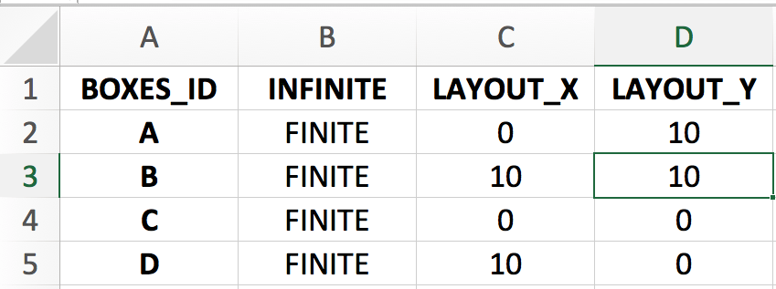
We assume that fluxes are expressed in mg of Ca per day, sizes in mg of Ca and run time units will be days.
The FLUXES sheet describes 5 flux lists
-
Fx1_ABC_bal describes a balanced closed system composed of 3 finite boxes A, B and C.
-
Fx2_ABC_unbal describes an unbalanced closed system composed of 3 finite boxes A, B and C.
-
Fx3_ABC_unbal describes an unbalanced closed system composed of 3 finite boxes A, B and C.
-
Fx4_ABCD_bal describes a balanced closed system composed of 4 finite boxes A, B, C and D.
- Fx5_ABCD_unbal describes an unbalanced closed system composed of 4 finite boxes A, B, C and D.
All box sizes are here set at 2000 mg.
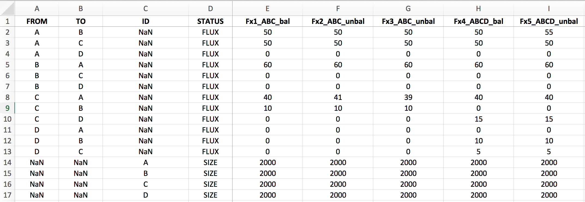
The COEFFS sheet describes 5 lists of fractionation coefficients:
-
a0 describes no isotope fractionation (all \(\alpha_{i \to j}\) being equal to one)
-
a1 describes a system with 1 fractionation coefficient being different from 1:
\(\alpha_{A \to B} = 0.999\)
-
a2 describes a system with 2 fractionation coefficients being different from 1:
\(\alpha_{A \to B} = 0.999\), \(\alpha_{B \to A} = 1.001\)
-
a3 describes a system with 3 fractionation coefficients being different from 1:
\(\alpha_{A \to B} = 0.999\), \(\alpha_{B \to A} = 1.001\), \(\alpha_{C \to A} = 0.9997\)
-
a4 describes a system with 1 fractionation coefficient being different from 1:
\(\alpha_{C \to D} = 0.99\)
- Note
- how these lists of coefficients only refer to 4 fractionation coefficients, while the total number of possible box pairs is 16. The
run_isobxrfunction takes into consideration the documented pairs (both for fluxes and fractionation coefficients), and automatically sets the value of undocumented pairs to the default one (0 for fluxes and 1 for fractionation coefficients).

Balanced 3-boxes closed system model
We consider here the case a balanced closed system of 3 finite boxes (flux list Fx1_ABC_bal).
For this run we use the a1 fractionation coefficients list.
We will run this model for a total time of 2500 days with a resolution of 1 calculation every 10 days (250 steps).
run_isobxr(workdir = "~/DEMO_ABCD", # isobxr master file work. dir. SERIES_ID = "ABC_balanced_closed", # series ID of the set of runs flux_list_name = "Fx1_ABC_bal", # which flux list from FLUXES sheet coeff_list_name = "a1", # which coefficients list from COEFFS sheet t_lim = 2500, # how long do I want to run nb_steps = 250, # how many steps over this run duration time_units = c("days", "years"), # run time units (days), plot time units (years) PLOT_evD = TRUE) # export plot as pdf
The first default outputs of the run are the messages sent by the function on the R console (all of these pieces of information being besides stored in the LOG file).
The run_isobxr function therefore choses to run the analytical solver (ana_slvr).
In the case of this run we can see the following messages:
#> [1] "< All boxes are FINITE >"
#> [1] "< Running ana_slvr (BALANCED FINITE BOXES) > "This is expected since no INFINITE box has been declared and all inward and outward fluxes for each box are expected to be balanced.
The associated pre-run outputs (optional) are the model diagrams of fluxes (left) and of fractionation coefficients (right, expressed as amplitude of isotope fractionation, in ‰).


Finally, the post-run output includes the evolution of \(\delta\) values over the run duration, shown in years for this run.

Note that the run resolution can be seen by the discrete behavior of the evolution of \(\delta\) values on the left handside of the logarithmic time scale. This display effect would be smoothed out by a higher run resolution (nb_steps = 2500 or 25000 for instance).
Unbalanced 3-boxes closed system model
We consider here the case of an unbalanced closed system of 3 finite boxes (flux list Fx2_ABC_unbal).
For this run we use the a1 fractionation coefficients list.
We will run this model for a total time of 2500 days with a resolution of 1 calculation every 10 days (250 steps).
run_isobxr(workdir = "~/DEMO_ABCD", # isobxr master file work. dir. SERIES_ID = "ABC_unbalanced_closed", # series ID of the set of runs flux_list_name = "Fx2_ABC_unbal", # which flux list from FLUXES sheet coeff_list_name = "a1", # which coefficients list from COEFFS sheet t_lim = 2500, # how long do I want to run nb_steps = 250, # how many steps over this run duration time_units = c("days", "years"), # run time units (days), plot time units (years) PLOT_evD = TRUE) # export plot as pdf
The first default outputs of the run are the messages sent by the function on the R console (all of these pieces of information being besides stored in the LOG file).
In the case of this run we can see the following messages:
#> [1] "< All boxes are FINITE >"
#> [1] "< A IN-OUT BALANCE is pos >"
#> [1] "< C IN-OUT BALANCE is neg (max run: 2000 t units) >"
#> [1] "< Running num_slvr (UNBALANCED FINITE BOXES) >"
#> [1] "*** UPDATED TOTAL RUN TIME *** < Total run time has been changed from 2500 to 2000 (limiting box: C) > "The first message is expected since no INFINITE box has been declared.
The second and third lines point out the fact that boxes A and C are out of balance: A accumulates calcium while C loses calcium.
The function also tells us that it will take in total 2000 days for the box C to be totally emptied. This is expected since C has a size of 2000 mg and, as can be seen on the flux diagram below, C loses 1 mg of Ca per day.
The run_isobxr function therefore choses to run the numerical solver (num_slvr).
Finally, the run_isobxr function warns the user: it automatically updated the total run time, changing it from 2500 days to 2000 days because the box C would have lost all of its calcium by 2000 days.
The associated pre-run outputs (optional) are the model diagrams of fluxes (left) and of fractionation coefficients (right, expressed as amplitude of isotope fractionation, in ‰).


Finally, the post-run output includes the evolution of \(\delta\) values over the run duration, shown in years for this run.

Note that in this example, the slight imbalance does not affect the overall bevaviour of the system at time scale when compared to the balanced system.
Formatting the forcing parameters
Forcing initial box sizes
By default, the run_isobxr function sets the initial box sizes (mass of element X in each box) at the values found in the flux list specified by user.
It is possible to manually overwrite the initial size of one, several or all boxes for a given run performed by run_isobxr.
It is done by defining a data frame structured as follows.
FORCING_SIZE <- data.frame(BOXES_ID = c("BOX_1", "...", "BOX_i", "..."), SIZE_INIT = c("updated_size_1", "...", "updated_size_i", "...")) FORCING_SIZE #> BOXES_ID SIZE_INIT #> 1 BOX_1 updated_size_1 #> 2 ... ... #> 3 BOX_i updated_size_i #> 4 ... ...
For the 3-boxes closed system model (ABC), in order to change the size of box C from 2000 mg of Ca (default as specified in isobxr master file for all flux lists of FLUXES sheet) to 3000 mg of Ca, the data frame should be structured as follows:
FORCING_SIZE <- data.frame(BOXES_ID = c("C"), SIZE_INIT = c(3000)) FORCING_SIZE #> BOXES_ID SIZE_INIT #> 1 C 3000
Forcing initial delta values
By default, the run_isobxr function sets the initial delta values of all boxes at 0 ‰.
It is possible to manually overwrite the initial delta values of one, several or all boxes for a given run performed by run_isobxr.
It is done by defining a data frame structured as follows.
FORCING_DELTA <- data.frame(BOXES_ID = c("BOX_1", "...", "BOX_i", "..."), DELTA_INIT = c("updated_delta_1", "...", "updated_delta_i", "...")) FORCING_DELTA #> BOXES_ID DELTA_INIT #> 1 BOX_1 updated_delta_1 #> 2 ... ... #> 3 BOX_i updated_delta_i #> 4 ... ...
For the 3-boxes closed system model (ABC), in order to force the fractionation coefficient associated to the flux of Ca from box A to B to the value of 1.02, the data frame should be structured as follows:
FORCING_DELTA <- data.frame(BOXES_ID = c("A"), DELTA_INIT = c(-1)) FORCING_DELTA #> BOXES_ID DELTA_INIT #> 1 A -1
Forcing isotope fractionation coefficients
By default, the run_isobxr function sets the isotope fractionation coefficients at the values found in the coefficients list specified by user.
It is possible to manually overwrite the fractionation coefficients of one, several or all pairs of boxes for a given run performed by run_isobxr.
It is done by defining a data frame structured as follows.
FORCING_ALPHA <- data.frame(FROM = c("BOX_i", "..."), TO = c("BOX_j", "..."), ALPHA = c("new_coeff_value", "..."), FROM_TO = c("BOX_i_BOX_j", "...")) FORCING_ALPHA #> FROM TO ALPHA FROM_TO #> 1 BOX_i BOX_j new_coeff_value BOX_i_BOX_j #> 2 ... ... ... ...
For the 3-boxes closed system model (ABC), in order to force the fractionation coefficient associated to the flux of Ca from box A to B to the value of 1.02, the data frame should be structured as follows:
FORCING_ALPHA <- data.frame(FROM = c("A"), TO = c("B"), ALPHA = c(1.02), FROM_TO = c("A_B")) FORCING_ALPHA #> FROM TO ALPHA FROM_TO #> 1 A B 1.02 A_B
Forcing fractionation coefficient to a Rayleigh distillation model
It is possible to overwrite isotope fractionation coefficients by defining their values as the result of Rayleigh type isotope distillation in the context of a fractional exchange at an interface.
We consider here the case of the loss of element X from a box A to a box C through an interface box B, all possibly part of a bigger box model system.
We suppose that the apparent fractionation coefficient \(\alpha_{A \to C}\) associated to this flux \(F_{A \to C}\) results from a Rayleigh type distillation occuring during the fractional exchange of element X at the interface box B.

In this situation, the box A exchanges element X with box B (and possibly other boxes).
This is a fractional exchange, i.e. during this exchange, box A sends more of element X to box B than B sends back (\(F_{A \to B} > F_{B \to A}\)).
As we consider box B to be balanced, it loses the difference to box C: \(F_{B \to C} = F_{A \to B} - F_{B \to A}\).
As a result, box A loses a total of \(F_{B \to C}\) of element X per time unit.
We suppose here that the \(F_{A \to B}\) that feeds box B is associated to no isotope fractionation.
On the other hand, we suppose that the \(F_{B \to A}\) flux corresponding to the fractional loss of element X from interface box B, and returning to box A, is associated to an equilibrium or incremental isotope fractionation (\(\alpha^0 _{B \to A}\)).
The Rayleigh distillation model of isotopes thus predicts the following:
\[R_{C} = R_{C, t_0} \dfrac{F_{B \to C}}{F_{A \to B}}^{\alpha^0 _{B \to A} - 1} \]
The \(R_{C, t_0}\) corresponds to the isotope ratio of the element X in box B before any exchange with box A occurs. It is thus equivalent to \(R_{A}\) since the box B only input is via the \(F_{A \to B}\) flux.
We thus can write the following definition of \(\alpha_{B \to C}\) (equivalent here to \(\alpha_{A \to C}\)):
\(\alpha_{B \to C} = \dfrac{R_{C}}{R_{A}} = \dfrac{F_{B \to C}}{F_{A \to B}}^{\alpha^0 _{B \to A} - 1}\)
The run_isobxr function here takes as an optional input the data frame structured as follows:
FORCING_RAYLEIGH <- data.frame(XFROM = c("B"), # Define the B>C flux at numerator XTO = c("C"), YFROM = c("A"), # Define the A>B flux at denominator YTO = c("B"), AFROM = c("B"), # Define the resulting fractionation coefficient ATO = c("C"), ALPHA_0 = c("a0") # Define the value of incremental B>A coefficient ) FORCING_RAYLEIGH #> XFROM XTO YFROM YTO AFROM ATO ALPHA_0 #> 1 B C A B B C a0
The run_isobxr function will in this case overwrite the value of \(\alpha_{B \to C}\) set in isobxr master file or using the FORCING_ALPHA parameter.
Indeed, if the user forced a new value for \(\alpha_{B \to C}\) using the FORCING_ALPHA parameter, the run_isobxr function will prioritize the FORCING_RAYLEIGH parameter.
It is possible to define several Rayleigh distillation apparent fractionation coefficients in a given model.
This is done by adding rows to this data frame.
Dealing with an open system
The user should define a source box and a sink box and declare them in the BOXES sheet as INFINITE. We give below an example of a run of for an open system.

These boxes should have infinite sizes defined in relation to the system scale (important for runs with unbalanced finite boxes, which will use the numerical solver). In this example, both source and sink box sizes were set at \(10^{15}\).
The source box should only be used with outward fluxes to the open system and should not receive any flux from it.
The sink box should only be used with inward fluxes from the open system and should not send any flux to it.
The function call would be the following for a run of 25000 days, with one calculation every 10 days (nb_steps = 2500).
We use the Fx6_ABC_open_bal flux list and the a1 coefficient list.
run_isobxr(workdir = "~/DEMO_ABCD", # isobxr master file work. dir. SERIES_ID = "ABC_balanced_open", # series ID of the set of runs flux_list_name = "Fx6_ABC_open_bal", # which flux list from FLUXES sheet coeff_list_name = "a1", # which coefficients list from COEFFS sheet t_lim = 25000, # how long do I want to run nb_steps = 2500, # how many steps over this run duration time_units = c("days", "years"), # run time units (days), plot time units (years) PLOT_evD = TRUE) # export plot as pdf
We obtain the following diagrams, where the infinite boxes display a different color.


And we finally obtain the following plot of the evolution of \(\delta\) values in all finite boxes over time, where we observe the relaxation of the system to it's steady state.

Note that both infinite boxes are hidden from this graphic representation but the isotope compositions of all boxes - including source and sink - are stored in the output data files.
While the sink (or waste) box is not informative as such, the source could have varying/non-zero initial \(\delta\) values, depending on the run parameters, used to force the open system. It will be notably of importance for the use of the compose_isobxr function, described thereafter.
Compose isobxr scenarios with compose_isobxr
How does compose_isobxr work?
The compose_isobxr function allows to perform a series of successive isobxr runs (calling the run_isobxr function), allowing to build a scenario of composite runs each one inheriting the final state of the previous run as its own initial state.
As defined in the documentation, compose_isobxr takes a series of inputs from a working directory as well as from the user in the console, it stores a track of all the run conditions both in run specific files and in a global LOG file, and it returns several outputs files to an automatically created and managed directory and subdirectories.
To find the detailed description of compose_isobxr inputs and outputs, refer to its documentation:
# To see documentation on run_isobxr function, type in console: ?compose_isobxr
The compose_isobxr general principle is shown in following diagram.
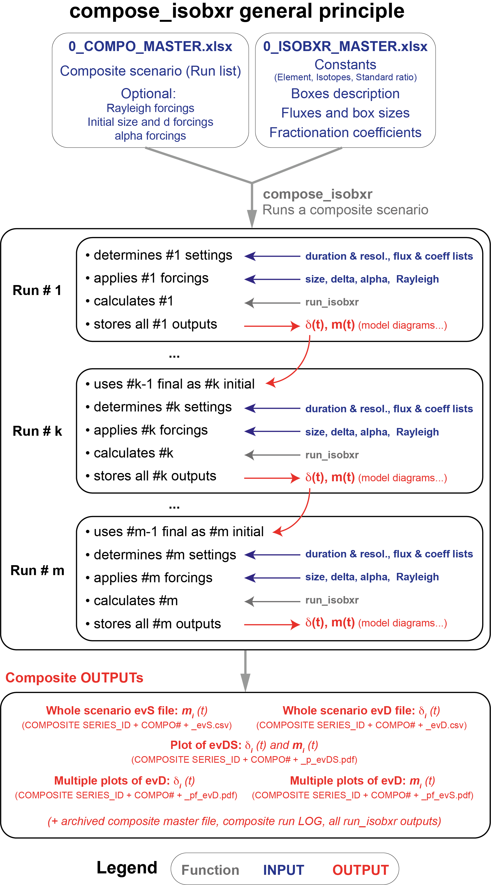
The basic principle of the compose_isobxr function lies in the fact that it performs a series of successive runs each of them inheriting from the previous runs final conditions as starting conditions.
The simplest use of the compose_isobxr function consists in composing a list of runs with various run duration and resolutions and changing flux lists or coefficients from one run to another.
For instance, it is possible to run a model of balanced system of finite boxes until total relaxation to steady state followed by a run of the same system in a given unbalanced conformation (different flux list) or with a modified set of fractionation coefficients (different coeff list).
Each run will inherit from the previous run final delta values and box sizes and use these as initial values.
It is possible to run the compose_isobxr function with various forcing parameters.
Format of the compose master file
In addition to the global isobxr master file, the compose_isobxr function requires a compose master file.
The compose master file is the (xlsx) document containing all commands allowing compose_isobxr function to compose a series of runs and build an isobxr scenario.
It is where the user sets the design of their isobxr scenario:
- necessary: define the list of m runs composing the scenario (run durations, run resolutions, lists of fluxes, lists of coefficients).
- optional: define the forcings over one or several runs composing the composite scenario (FORCING_RAYLEIGH, FORCING_ALPHA, FORCING_DELTA, FORCING_SIZE).
The format of the compose master file is standardized. The user is encouraged to comply with these standards, as described thereafter, otherwise there is a high probability for these functions to crash.
compose master file name and location
- The compose master file is an xlsx file.
- The compose master file name is chose by user and specified in the
compose_isobxrfunction inputs: [e.g., 0_COMPO_MASTER.xlsx ].
- the compose master file should be stored in the directory in which isobxr master file is found, where all runs for this box model system will be performed and where all outputs will be stored in automatically created subdirectories. This directory corresponds to the working directory (workdir) used as parameter of the
compose_isobxrfunction.
compose master file structure
The compose master file contains the 5 following sheet strictly named as follows:
-
RUN_LIST: define the list of m runs composing the scenario (run durations, run resolutions, lists of fluxes, lists of coefficients).
-
FORCING_RAYLEIGH: define Rayleigh forcings over one or several runs composing the composite scenario.
-
FORCING_ALPHA: define Rayleigh forcings over one or several runs composing the composite scenario.
-
FORCING_DELTA: define initial delta forcings over one or several runs composing the composite scenario.
- FORCING_SIZE: define initial box size forcings over one or several runs composing the composite scenario.
RUN_LIST sheet (FILLING REQUIRED)
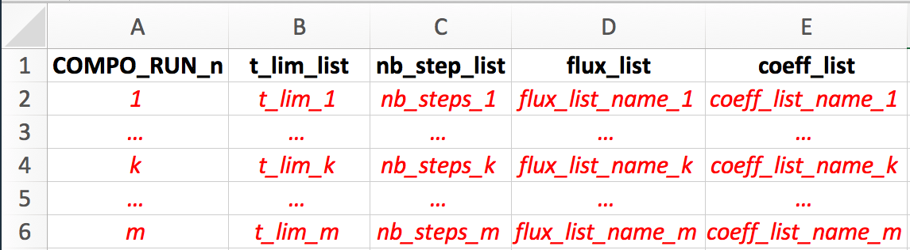
The compose_isobxr function requires a list of successive m runs.
Each of these runs should be succesively described one by one on every row of this sheet, with notably:
- the run number (COMPO_RUN_n column)
- the run duration (t_lim_list column)
- the run resolution (nb_steps_list)
- the flux list name (flux_list) that will be read from isobxr master file
- the coefficients list name (coeff_list) that will be read from isobxr master file
One run should not be described twice.
FORCING_SIZE sheet (FILLING OPTIONAL)
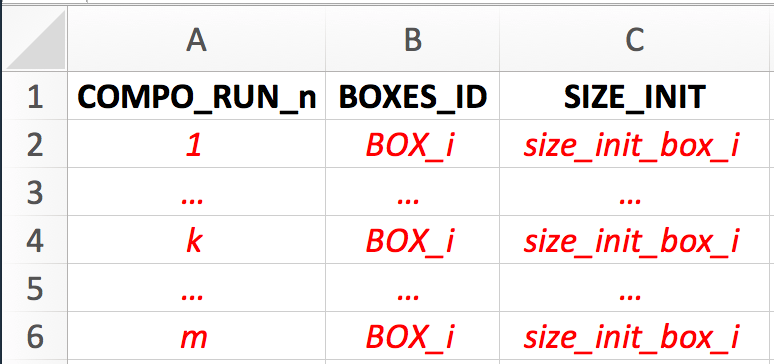
It is possible to force the initial size of a given run for one or several boxes.
To do so, you need to specify which run the forcing should apply to (COMPO_RUN_n column)
and the same details as required for the FORCING_SIZE parameter in run_isobxr (see previous section).
It is possible to force the local run initial size of several boxes within a given composite run by filling one line per box, with the same COMPO_RUN_n number.
In case no size forcing is required by the user, this sheet should remain with the table headers as such but with empty lines below.
FORCING_DELTA sheet (FILLING OPTIONAL)
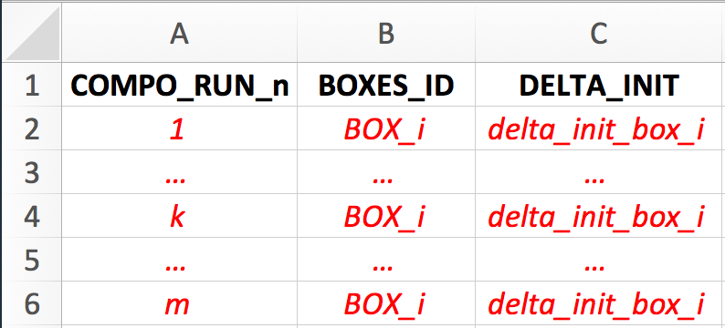
It is possible to force the initial delta values of a given run for one or several boxes.
To do so, you need to specify which run the forcing should apply to (COMPO_RUN_n column)
and the same details as required for the FORCING_DELTA parameter in run_isobxr (see previous section).
It is possible to force the local run initial delta of several boxes within a given composite run by filling one line per box, with the same COMPO_RUN_n number.
In case no delta forcing is required by the user, this sheet should remain with the table headers as such but with empty lines below.
FORCING_ALPHA sheet (FILLING OPTIONAL)
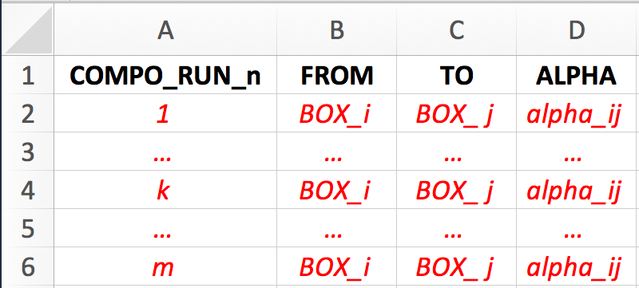
It is possible to force the fractionation coefficient values of a given run for one or several pairs of boxes.
To do so, you need to specify which run the forcing should apply to (COMPO_RUN_n column)
and the same details as required for the FORCING_ALPHA parameter in run_isobxr (see previous section).
It is possible to force the local run fractionation coefficients of several pairs of boxes within a given composite run by filling one line per pair of boxes, with the same COMPO_RUN_n number.
In case no alpha forcing is required by the user, this sheet should remain with the table headers as such but with empty lines below.
FORCING_RAYLEIGH sheet (FILLING OPTIONAL)
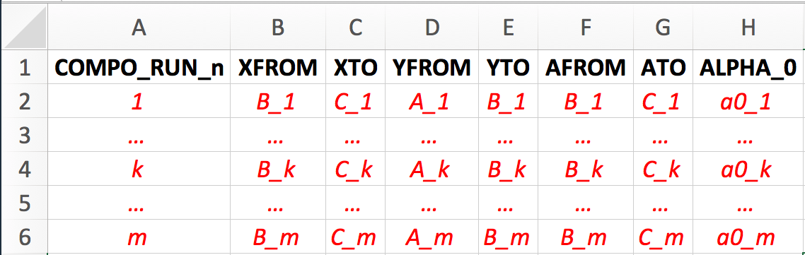
It is possible to force the fractionation coefficient to follow a Rayleigh distillation model in a given run for one or several Rayleigh distillation models.
To do so, you need to specify which run the forcing should apply to (COMPO_RUN_n column)
and the same details as required for the FORCING_RAYLEIGH parameter in run_isobxr (see previous section).
It is possible to force the local run fractionation coefficients of several pairs of boxes within a given composite run by filling one line per pair of boxes, with the same COMPO_RUN_n number.
In case no Rayleigh forcing is required by the user, this sheet should remain with the table headers as such but with empty lines below.
Using compose_isobxr
example #1: perturbating the fluxes
We compose here the first scenario as described on the screenshot of the composite master file used for this run.
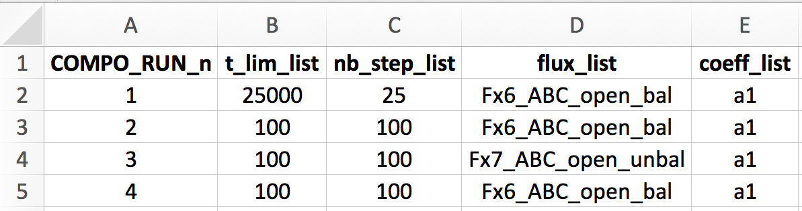
Here, we start with the previous example: a set of 3 finite boxes (A, B, C) consituting an open system interacting with the environment (SOURCE and SINK boxes).
- We first let the system relax to its' steady-state in a balanced configuration using the Fx6_ABC_open_bal flux list for a total of 25000 days (70 years).
- We then let the system run with the exact same conditions for 100 days.
- We then provoke a disequilibrium by using an unbalanced Fx7_ABC_open_unbal flux list (A loses 10 mg of Ca per day, B accumulates 10 mg of Ca per day).
- We then let the system relax again with the previous balanced flux configuration (Fx6_ABC_open_bal) but with automatically inherited different initial conditions of delta and size values.
We call the function as follows:
workdir <- "~/DEMO_ABCD" # isobxr and compo master file work. dir. SERIES_ID <- "ABC_change_balance" # series ID of the set of compo runs time_units <- c("days", "days") # time units for run (days) and for plots (years) COMPO_MASTER <- "0_COMPO_MASTER_balance_change.xlsx" # compo master file name plot_HIDE_BOXES_delta <- c("SINK") # boxes to hide from evD plot plot_HIDE_BOXES_size <- c("SOURCE", "SINK") # boxes to hide from evS plot compose_isobxr(workdir, SERIES_ID, time_units, COMPO_MASTER, plot_HIDE_BOXES_delta, plot_HIDE_BOXES_size)
We obtain the following overviews of the evolution of delta values and box sizes over the run duration. By default the plotting functionnality of the compose_isobxr function hides initial run of the composite scenario because it is usually used as a run to let the system artificially relax to it's steady state.
Nevertheless, all the data files edited by the function do include the initial run of the composite scenario.
Below is the plot evDS output of both delta and box sizes over time. 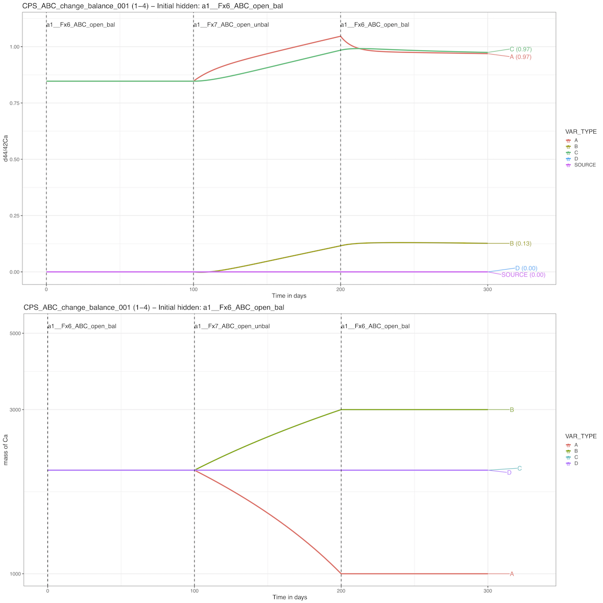
Below is the facetted plot evD output of delta values in each box over time. 
Below is the facetted plot evS output of box sizes in each box over time. 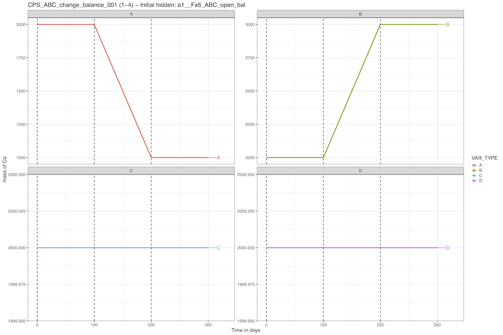
example #2: changing the source isotope composition
We consider here the same model example of 3 balanced finite boxes in an open system.
In this case, we leave the same balanced flux configuration for the whole duration of the scenario. We also leave the run durations and resolutions unchanged.
We however force the delta values of the source box as shown below:

- At runs 1 and 2, we leave the source default delta value (0‰).
- At run 3, we change the source default delta value from 0 to + 0.5 ‰.
- At run 4, we change the source delta value bcak to 0‰.
We call the function as follows:
workdir <- "~/DEMO_ABCD" # isobxr and compo master file work. dir. SERIES_ID <- "ABC_change_source" # series ID of the set of compo runs time_units <- c("days", "days") # time units for run (days) and for plots (years) COMPO_MASTER <- "0_COMPO_MASTER_source_change.xlsx" # compo master file name plot_HIDE_BOXES_delta <- c("SINK") # boxes to hide from evD plot plot_HIDE_BOXES_size <- c("SOURCE", "SINK") # boxes to hide from evS plot compose_isobxr(workdir, SERIES_ID, time_units, COMPO_MASTER, plot_HIDE_BOXES_delta, plot_HIDE_BOXES_size)
And for instance, we obtain the following evDS pdf output where we see that the effect of the change in the source isotope composition slightly affects the delta values of A, B and C boxes.
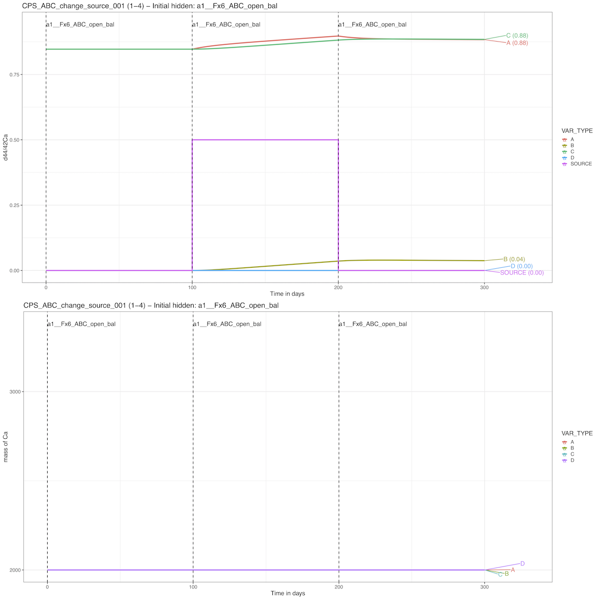
2D sweep final state with sweep_steady
How does sweep_steady work?
The sweep_steady function is designed to allow the user to map the combined effects of two parameters over the final state of an isobxr box model.
It's structure is shown below:
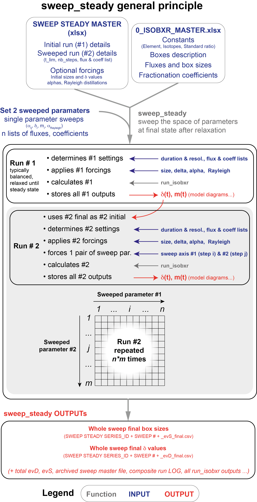
The sweep_steady function is built as a 2 steps composite scenario.
The first run (run #1) is used to force the initial conditions of the second run. It is run once only.
- The second run (run #2) is repeated for all the combinations of the two parameters values.
- Each parameter varies over a range of values defined by the user:
- parameter #1 is ranging over n values, parameter #2 over m values.
- parameter #1 is ranging over n values, parameter #2 over m values.
- Run #2 is repeated over the whole 2D space of parameters (\(n \times m\) times).
- Each parameter varies over a range of values defined by the user:
The main purpose of this sweep_steady structure is:
- to explore the influence of a pair of parameters over the distribution of isotopes in the system at the final state of run #2
- while starting this run #2 from a common initial state, defined by run #1
- run #1 typically being for a balanced system, relaxed to it's steady state
Format of the sweep steady master file
In addition to the global isobxr master file, the sweep_steady function requires a sweep steady master file.
The sweep steady master file is the (xlsx) document containing all commands allowing sweep_steady function to compose a scenario of 2 runs.
The two parameters to be sweeped over run #2 are defined by user directly in the function input, in the R console.
The format of the sweep steady master file is the same as the compose master file and the sweep dynamic master file.
It is where the user sets the design of their 2 runs scenario to be sweeped:
- necessary: define the list of 2 runs composing the scenario (run durations, run resolutions, lists of fluxes, lists of coefficients).
- optional: define the forcings over one or both runs composing the composite scenario (FORCING_RAYLEIGH, FORCING_ALPHA, FORCING_DELTA, FORCING_SIZE).
The format of the sweep steady master file is standardized. The user is encouraged to comply with these standards, as described thereafter, otherwise there is a high probability for these functions to crash.
sweep steady master file name and location
- The sweep steady master file is an xlsx file.
- The sweep steady master file name is chosen by user and specified in the
sweep_steadyfunction inputs: [e.g., 0_SWEEP_STEADY_MASTER.xlsx ].
- the sweep steady master file should be stored in the directory in which isobxr master file is found, where all runs for this box model system will be performed and where all outputs will be stored in automatically created subdirectories. This directory corresponds to the working directory (workdir) used as parameter of the
sweep_steadyfunction.
sweep steady master file structure
The sweep steady master file contains the 5 following sheet strictly named as follows:
-
RUN_LIST: define the list of 2 runs composing the sweep steady scenario (run durations, run resolutions, lists of fluxes, lists of coefficients).
-
FORCING_RAYLEIGH: define Rayleigh forcings over one or several runs composing the sweep 2 steps scenario.
-
FORCING_ALPHA: define Rayleigh forcings over one or several runs composing the sweep 2 steps scenario.
-
FORCING_DELTA: define initial delta forcings over one or several runs composing the sweep 2 steps scenario.
- FORCING_SIZE: define initial box size forcings over one or several runs composing the sweep 2 steps scenario.
RUN_LIST sheet (FILLING REQUIRED)
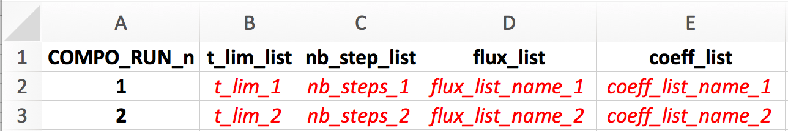
The sweep_steady function strictly requires a list of 2 successive runs.
Both of these runs should be succesively described one by one on two rows of this sheet, with notably:
- the run number (COMPO_RUN_n column)
- the run duration (t_lim_list column)
- the run resolution (nb_steps_list)
- the flux list name (flux_list) that will be read from isobxr master file
- the coefficients list name (coeff_list) that will be read from isobxr master file
FORCING_SIZE sheet (FILLING OPTIONAL)
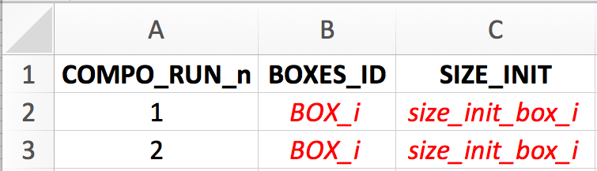
See composite master file format description for details.
FORCING_DELTA sheet (FILLING OPTIONAL)
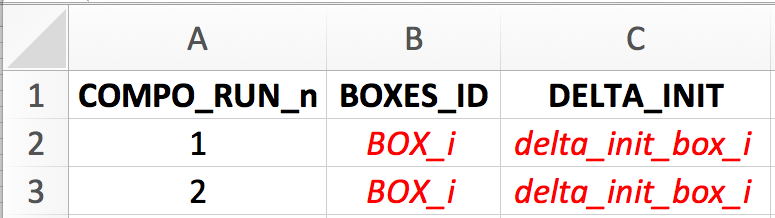
See composite master file format description for details.

Using sweep_steady
Preparing the sweep steady master file
The user needs to define the two runs composing the 2 steps scenario.
- The first run is used to let the system relax to its steady state used as an initial state in run #2.
- The user should consider here a balanced system. The isobxr functions will thus use the analytical solver (
ana_slvr). - We thus recommand the user to set the number of steps for run #1 (nb_steps) to 1 (its' minimum value).
This allows to only calculate the final state of the system, at the end of run #1.
This reduces the calculation time and data produced without affecting the accuracy of the calculation.
- The user should consider here a balanced system. The isobxr functions will thus use the analytical solver (
- The second run is used to explore the final state of the system as a function of all combinations of parameters #1 and #2 values.
- The main purpose of this function is to explore the influence of the 2 combined parameters over the final state of a system that relaxed to it's steady state.
- It is therefore recommended to use the same balanced system over the second run, allowing to analytically solve the system (with
ana_slvr). - The use of the analytical solver will notably allow to map the final state at a high resolution of parameters #1 and #2
while minimizing the required calculation time as well as RAM and hard memory.
- We thus recommand the user to set the number of steps for run #2 (nb_steps) to 1 (its' minimum value).
This allows to only calculate the final state of the system, at the end of run #2.
This reduces the calculation time and data produced without affecting the accuracy of the calculation.
- remark
- The reason why the
sweep_steadyfunction begins with a run #1 which final state defines a common initial state for all repeated run #2 sweeps is that it can allow the user to sweep the final state of a system in the course transient/dynamic state of run #2, being in a balanced or unbalanced system. This needs however to be designed with care as depending on the defined or forced parameters on run #2 vs. run #1, the continuity of the conditions of run #1 and run #2 is not certain. It is then advised to use the better suitedsweep_dynfunction described thereafter. - Forcings
- The user can define some forcings over the system (will affect both run #1 and run #2).
These forcings will overwrite the conditions set by the reading of the isobxr master file.
These forcings will be overwritten by the sweeped parameters that affect run #2.
sweep_steady console defined sweep parameters
In addition to all the usual input parameters required for the sweep_steady function, the user has to define the two parameters to be sweeped.
There are 6 types of sweepable parameters (or that can be explored), which names are strictly defined as follows:
#> [1] "EXPLO_n_FLUX_MATRICES"
#> [1] "EXPLO_n_ALPHA_MATRICES"
#> [1] "EXPLO_1_SIZE"
#> [1] "EXPLO_1_DELTA"
#> [1] "EXPLO_1_ALPHA"
#> [1] "EXPLO_1_RAYLEIGH_ALPHA"EXPLO_n_FLUX_MATRICES:
This type of parameter allows to explore a series of flux lists as defined in isobxr master file.
data.frame(VALUES = c("flux_list_1", # vector of n strings of characters "...", "flux_list_i", "...", "flux_list_n"), EXPLO_TYPES = "EXPLO_n_FLUX_MATRICES") # stricly leave as such
The EXPLO_n_FLUX_MATRICES parameter will allow the sweep_steady function to sweep the effect of a series of flux lists (defining flux matrices and initial box sizes) on run #2 evolution.
The format of this data frame should be exactly as shown above.
The values are a vector of strings of characters containing the list of flux list names, that will be called from the isobxr master file
EXPLO_n_ALPHA_MATRICES:
This type of parameter allows to explore a series of lists of coefficients as defined in isobxr master file.
data.frame(VALUES = c("coeff_list_1", # vector of n strings of characters "...", "coeff_list_i", "...", "coeff_list_n"), EXPLO_TYPES = "EXPLO_n_ALPHA_MATRICES") # stricly leave as such
The EXPLO_n_ALPHA_MATRICES parameter will allow the sweep_steady function to sweep the effect of a series of isotope fractionation coefficient lists (defining coefficient matrices) on run #2 evolution.
The format of this data frame should be exactly as shown above.
The values are a vector of strings of characters containing the list of coefficients list names, that will be called from the isobxr master file
EXPLO_1_SIZE:
This type of parameter allows to explore a range of sizes for a given box.
data.frame(BOXES_ID = "BOX_i", # 1 string of char SIZE_MIN = "min_sweep_value", # 1 numerical value SIZE_MAX = "max_sweep_value", # 1 numerical value SIZE_STEPS = "sweep_steps", # 1 numerical value EXPLO_TYPES = "EXPLO_1_SIZE") # stricly leave as such
The EXPLO_1_SIZE parameter will allow the sweep_steady function to sweep the effect of a range of box sizes for a given box on run #2 evolution.
The format of this data frame should be exactly as shown above.
EXPLO_1_DELTA:
This type of parameter allows to explore a range of delta values for a given box.
data.frame(BOXES_ID = "BOX_i", # 1 string of char DELTA_MIN = "min_sweep_value", # 1 numerical value DELTA_MAX = "max_sweep_value", # 1 numerical value DELTA_STEPS = "sweep_steps", # 1 numerical value EXPLO_TYPES = "EXPLO_1_DELTA") # stricly leave as such
EXPLO_1_ALPHA:
This type of parameter allows to explore a range of alpha (coeff) values for a given flux.
data.frame(FROM = "BOX_i", # 1 string of char TO = "BOX_j", # 1 string of char ALPHA_MIN = "min_sweep_value", # 1 numerical value ALPHA_MAX = "max_sweep_value", # 1 numerical value ALPHA_STEPS = "sweep_steps", # 1 numerical value EXPLO_TYPES = "EXPLO_1_ALPHA") # stricly leave as such
EXPLO_1_RAYLEIGH_ALPHA:
This type of parameter allows to explore a range of incremental alpha values for a Rayleigh distillation model.
data.frame(XFROM = "Box_B", # B>C flux at numerator (strings of char) XTO = "Box_C", YFROM = "Box_A", # A>B flux at denominator (strings of char) YTO = "Box_B", AFROM = "Box_B", # resulting fract. coefficient (strings of char) ATO = "Box_C", ALPHA_0_MIN = "min_sweep_value", # value of incremental B>A coeff. (num.) ALPHA_0_MAX = "max_sweep_value", ALPHA_0_STEPS = "sweep_steps", EXPLO_TYPES = "EXPLO_1_RAYLEIGH_ALPHA") # stricly leave as such
Example: sweeping two fractionation coefficients in a 3-boxes balanced open system
Here:
- using the sweep steady master file provided for demonstration (0_EXPLO_STEADY_MASTER_demo1.xlsx)
- we perform a sweep of the \(\alpha _{C \to B}\) values and \(\alpha _{A \to C}\) values at steady state of run #2
- starting from a run #1 at steady state obtained by the relaxation of the system with the a1 coefficients list and the Fx6_ABC_open_bal flux list
No forcings are applied.
To do so, the sweep_steady function can be used as follows:
workdir <- "~/DEMO_ABCD" # isobxr and compo master file work. dir. SERIES_ID <- "ABC_sweep_steady_demo1" # series ID of the set of compo runs time_units <- c("days", "days") # time units for run (days) and for plots (years) EXPLO_MASTER <- "0_EXPLO_STEADY_MASTER_demo1.xlsx" # compo master file name EXPLO_AXIS_1 <- data.frame(FROM = c("C"), TO = c("B"), ALPHA_MIN = 1, ALPHA_MAX = 1.0005, ALPHA_STEPS = 0.00005, EXPLO_TYPES = "EXPLO_1_ALPHA") EXPLO_AXIS_2 <- data.frame(FROM = c("A"), TO = c("C"), ALPHA_MIN = 0.9996, ALPHA_MAX = 1, ALPHA_STEPS = 0.00005, EXPLO_TYPES = "EXPLO_1_ALPHA") sweep_steady(workdir, SERIES_ID, time_units, EXPLO_MASTER, EXPLO_AXIS_1, EXPLO_AXIS_2)
You can explore the outputs by then using the isobxr Shiny app (runShinyPlots function, presented below).
2D sweep dynamic response with sweep_dyn
How does sweep_dyn work?
The sweep_dyn function is designed to allow the user to map the combined effects of two parameters over the dynamic response of an isobxr box model, typically in a system at steady state suddenly facing a perturbation.
It's structure is shown below:
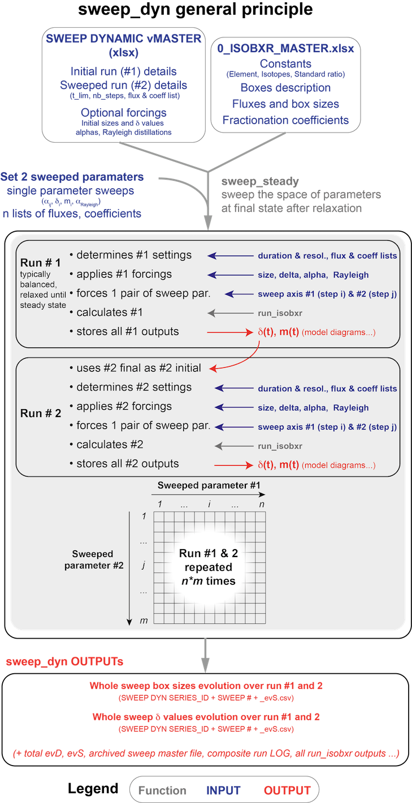
The sweep_dyn function is built as a 2 steps composite scenario.
- The first run (run #1) is used to force the initial conditions of the second run. It is run repeatedly together with run #2 over the whole space of parameters defined by user.
- The second run (run #2) takes system final state of the run #2 as initial state. It is run repeatedly together with run #1 over the whole space of parameters defined by user.
- Both runs (#1 and #2) are repeated together for all the combinations of the two parameters values.
- Each parameter varies over a range of values defined by the user:
- parameter #1 is ranging over n values, parameter #2 over m values.
- parameter #1 is ranging over n values, parameter #2 over m values.
- Run #1 and #2 are repeated over the whole 2D space of parameters (\(n \times m\) times).
- Each parameter varies over a range of values defined by the user:
The main purpose of this sweep_dyn structure is:
- to explore the influence of a pair of parameters over the dynamic evolution during run #2 of isotope compositions (and box sizes) in all boxes,
- while starting this run #2 from a an initial state defined by run #1 that also depends on the sweeped parameters
- run #1 typically being for a balanced system, relaxed to it's steady state
Format of the sweep dyn master file
In addition to the global isobxr master file, the sweep_dyn function requires a sweep dyn master file.
The sweep dyn master file is the (xlsx) document containing all commands allowing sweep_dyn function to compose a scenario of 2 runs.
The two parameters to be sweeped over run #1 and #2 are defined by user directly in the function input, in the R console.
The format of the sweep dyn master file is the same as the compose master file and the sweep steady master file.
It is where the user sets the design of their 2 runs scenario to be sweeped:
- necessary: define the list of 2 runs composing the scenario (run durations, run resolutions, lists of fluxes, lists of coefficients).
- optional: define the forcings over one or both runs composing the scenario (FORCING_RAYLEIGH, FORCING_ALPHA, FORCING_DELTA, FORCING_SIZE).
The format of the sweep dyn master file is standardized. The user is encouraged to comply with these standards, as described thereafter, otherwise there is a high probability for these functions to crash.
sweep dyn master file name and location
- The sweep dyn master file is an xlsx file.
- The sweep dyn master file name is chosen by user and specified in the
sweep_dynfunction inputs: [e.g., 0_SWEEP_DYN_MASTER.xlsx ].
- the sweep dyn master file should be stored in the directory in which isobxr master file is found, where all runs for this box model system will be performed and where all outputs will be stored in automatically created subdirectories. This directory corresponds to the working directory (workdir) used as parameter of the
sweep_dynfunction.
sweep dyn master file structure
The sweep dyn master file contains the 5 following sheet strictly named as follows:
-
RUN_LIST: define the list of 2 runs composing the sweep dyn scenario (run durations, run resolutions, lists of fluxes, lists of coefficients).
-
FORCING_RAYLEIGH: define Rayleigh forcings over one or several runs composing the sweep 2 steps scenario.
-
FORCING_ALPHA: define Rayleigh forcings over one or several runs composing the sweep 2 steps scenario.
-
FORCING_DELTA: define initial delta forcings over one or several runs composing the sweep 2 steps scenario.
- FORCING_SIZE: define initial box size forcings over one or several runs composing the sweep 2 steps scenario.
RUN_LIST sheet (FILLING REQUIRED)
The sweep_dyn function strictly requires a list of 2 successive runs.
Both of these runs should be succesively described one by one on two rows of this sheet, with notably:
- the run number (COMPO_RUN_n column)
- the run duration (t_lim_list column)
- the run resolution (nb_steps_list)
- the flux list name (flux_list) that will be read from isobxr master file
- the coefficients list name (coeff_list) that will be read from isobxr master file
Using sweep_dyn
Preparing the sweep dyn master file
The user needs to define the two runs composing the 2 steps scenario.
- The first run is typically used to let the system relax to its steady state used as an initial state in run #2.
- The user should consider here a balanced system. The isobxr functions will thus use the analytical solver (
ana_slvr). - We thus recommand the user to set the number of steps for run #1 (nb_steps) to 1 (its' minimum value).
This allows to only calculate the final state of the system, at the end of run #1.
This reduces the calculation time and data produced without affecting the accuracy of the calculation.
- The user should consider here a balanced system. The isobxr functions will thus use the analytical solver (
- The second run is used to explore the dynamic response of the system in the face of a given perturbation, as a function of all combinations of parameters #1 and #2 values.
- The main purpose of this function is to explore the influence of the 2 combined parameters over the time dependent response of a system that previously relaxed to it's steady state.
- The user has the choice to define a balanced or an unbalanced system in the run #2. A. The latter case (unbalanced system) could here constitute the perturbation of the system. The
sweep_dynfunction will here numerically solve the run #2 (num_slvr). A. In the case of a balanced system for run #2, thesweep_dynfunction will analytically solve the run #2 (ana_slvr). A. The user should here be aware that the sweeping of the space of parameters using either thenum_slvrorana_slvrcan be time consuming and require a fair bit of calculating power.
The user is advised to wisely define the space of parameters (which will define the number of \(n \times m\) iterations) as well as the run resoluion of run #2 (nb_steps).
- remark
- The reason why the
sweep_dynfunction sweeps both initial run #1 and run #2 is that the user might want to sweep parameters that are actually affecting the steady state of the system (e.g., sweep a series of lists of fluxes or coefficients). - Forcings
- The user can define some forcings over the system (will affect both run #1 and run #2).
These forcings will overwrite the conditions set by the reading of the isobxr master file.
These forcings will be overwritten by the sweeped parameters that affect run #1 and #2.
sweep_dyn console defined sweep parameters
In addition to all the usual input parameters required for the sweep_dyn function, the user has to define the two parameters to be sweeped.
There are 6 types of sweepable parameters (or that can be explored), which names are strictly defined as follows:
#> [1] "EXPLO_n_FLUX_MATRICES"
#> [1] "EXPLO_n_ALPHA_MATRICES"
#> [1] "EXPLO_1_SIZE"
#> [1] "EXPLO_1_DELTA"
#> [1] "EXPLO_1_ALPHA"
#> [1] "EXPLO_1_RAYLEIGH_ALPHA"EXPLO_n_FLUX_MATRICES:
This type of parameter allows to explore two series of flux lists as defined in isobxr master file, one for run #1 and one for run #2.
data.frame(VALUES_1 = c("flux_list_1", # RUN #1 vector of n strings of chars. "...", "flux_list_i", "...", "flux_list_n"), VALUES_2 = c("flux_list_1", # RUN #2 vector of n strings of chars. "...", "flux_list_i", "...", "flux_list_n"), EXPLO_TYPES = "EXPLO_n_FLUX_MATRICES") # stricly leave as such
The EXPLO_n_FLUX_MATRICES parameter will allow the sweep_dyn function to sweep the effect of two series of flux lists (defining flux matrices and initial box sizes) on run #1 and run #2 evolutions.
The format of this data frame should be exactly as shown above.
The values are two vectors of strings of characters containing the list of flux list names, that will be called from the isobxr master file.
EXPLO_n_ALPHA_MATRICES:
This type of parameter allows to explore two series of lists of coefficients as defined in isobxr master file, one for run #1 and one for run #2.
data.frame(VALUES_1 = c("coeff_list_1", # RUN #1 vector of n strings of chars. "...", "coeff_list_i", "...", "coeff_list_n"), VALUES_2 = c("coeff_list_1", # RUN #2 vector of n strings of chars. "...", "coeff_list_i", "...", "coeff_list_n"), EXPLO_TYPES = "EXPLO_n_ALPHA_MATRICES") # stricly leave as such
The EXPLO_n_ALPHA_MATRICES parameter will allow the sweep_dyn function to sweep the effect of two series of isotope fractionation coefficient lists (defining coefficient matrices) on run #1 and run #2 evolutions.
The format of this data frame should be exactly as shown above.
The values are two vectors of strings of characters containing the list of coefficients list names, that will be called from the isobxr master file.
EXPLO_1_SIZE:
This type of parameter allows to explore a range of sizes for a given box over both run #1 and run #2.
This parameter should be used only in the case where RUN #1 is balanced since it sets the initial box size for each run initial condition.
data.frame(BOXES_ID = "BOX_i", # 1 string of char SIZE_MIN = "min_sweep_value", # 1 numerical value SIZE_MAX = "max_sweep_value", # 1 numerical value SIZE_STEPS = "sweep_steps", # 1 numerical value EXPLO_TYPES = "EXPLO_1_SIZE") # stricly leave as such
The EXPLO_1_SIZE parameter will allow the sweep_dyn function to sweep the effect of a range of box sizes for a given box on run #1 and #2 evolution.
The format of this data frame should be exactly as shown above.
EXPLO_1_DELTA:
This type of parameter allows to explore a range of delta values for a given box over both run #1 and run #2.
This parameter should be used only for source boxes, since it will force the initial isotope composition of this box for both run #1 and run #2.
data.frame(BOXES_ID = "BOX_i", # 1 string of char DELTA_MIN = "min_sweep_value", # 1 numerical value DELTA_MAX = "max_sweep_value", # 1 numerical value DELTA_STEPS = "sweep_steps", # 1 numerical value EXPLO_TYPES = "EXPLO_1_DELTA") # stricly leave as such
EXPLO_1_ALPHA:
This type of parameter allows to explore a range of alpha (coeff) values for a given flux over both run #1 and run #2.
data.frame(FROM = "BOX_i", # 1 string of char TO = "BOX_j", # 1 string of char ALPHA_MIN = "min_sweep_value", # 1 numerical value ALPHA_MAX = "max_sweep_value", # 1 numerical value ALPHA_STEPS = "sweep_steps", # 1 numerical value EXPLO_TYPES = "EXPLO_1_ALPHA") # stricly leave as such
EXPLO_1_RAYLEIGH_ALPHA:
This type of parameter allows to explore a range of incremental alpha values for a Rayleigh distillation model for both run #1 and run #2. It is calculated for each run using the run's local flux configuration.
data.frame(XFROM = "Box_B", # B>C flux at numerator (strings of char) XTO = "Box_C", YFROM = "Box_A", # A>B flux at denominator (strings of char) YTO = "Box_B", AFROM = "Box_B", # resulting fract. coefficient (strings of char) ATO = "Box_C", ALPHA_0_MIN = "min_sweep_value", # value of incremental B>A coeff. (num.) ALPHA_0_MAX = "max_sweep_value", ALPHA_0_STEPS = "sweep_steps", EXPLO_TYPES = "EXPLO_1_RAYLEIGH_ALPHA") # stricly leave as such
Example: dynamic sweeping of the size of box B and one fractionation coefficient in a 3-boxes balanced open system after a change in the source isotope composition
Both run #1 and run #2 are performed with the a1 coefficients list, the Fx6_ABC_open_bal flux list and the sweeping paramaters.
The system faces a perturbation: the source isotope composition is shifted from 0 to -1 ‰ using the FORCING_DELTA sheet of the sweeping dynamic master file.
Here:
- using the sweep dynamic master file provided for demonstration (0_EXPLO_DYN_MASTER_demo1.xlsx)
- we perform a sweep of the box B size values and \(\alpha _{A \to C}\) values
- during the first 1000 days of run #2
- starting from a run #1 at steady state obtained by the relaxation of the system
No forcings other than the FORCING_DELTA on the SOURCE box are applied.
To do so, the sweep_steady function can be used as follows:
workdir <- "~/DEMO_ABCD" # isobxr and compo master file work. dir. SERIES_ID <- "ABC_change_source_sweep_dyn_demo1" # series ID of the set of compo runs time_units <- c("days", "days") # time units for run (days) and for plots (years) EXPLO_MASTER <- "0_EXPLO_DYN_MASTER_demo1.xlsx" # compo master file name EXPLO_AXIS_1 <- data.frame(BOXES_ID = c("B"), SIZE_MIN = 1500, SIZE_MAX = 2500, SIZE_STEPS = 250, EXPLO_TYPES = "EXPLO_1_SIZE") EXPLO_AXIS_2 <- data.frame(FROM = c("A"), TO = c("C"), ALPHA_MIN = 0.9988, ALPHA_MAX = 1, ALPHA_STEPS = 0.0004, EXPLO_TYPES = "EXPLO_1_ALPHA") sweep_dyn(workdir, SERIES_ID, time_units, EXPLO_MASTER, EXPLO_AXIS_1, EXPLO_AXIS_2)
Plotting with the isobxr plot editor app
Calling the Shiny app
The runShinyPlots function calls an isobxr Shiny app plotting interface (html interface accessible with any type of internet browser).
This app is still in its' \(\beta\) version but already allows to create many plots with a series of options for all outputs given by compose_isobxr, sweep_steady & sweep_dyn functions.
This is notably very useful for the complex outputs of sweep_steady & sweep_dyn functions.
This app also allows to export a pdf version of the plot.
# define workdir in which the SERIES directories are found # (SERIES directories start with 3_CPS, 4_STD or 4_DYN) # for instance: workdir <- "~/DEMO_ABCD" # Launch the shiny app runShinyPlots()